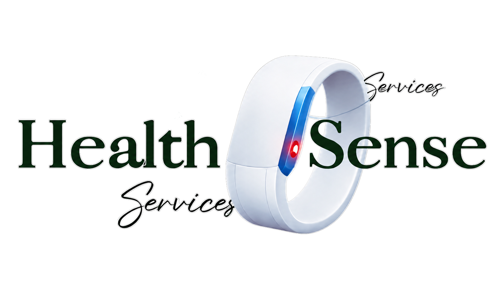

Sobre o nosso projeto
Nosso projeto é sobre uma pulseira inteligente capaz de monitorar os sinais vitais do paciente com um aplicativo que relata o diagnóstico dele para os profissionais de saúde com antecedência e, se houver alguma instabilidade, alerta todos os responsáveis técnicos do setor. O app será apenas disponibilizado para as empresas hospitalares (públicas) sobre um contrato. Ele será conectado ao sistema de banco de dados do hospital para evitar, ao máximo, falhas de atraso ou extravio de dados sobre os pacientes.
Prints do nosso APP:

Tela do médico.

Tela do paciente.
A Nossa História
A principal motivação inicial por trás do nosso projeto de TCC para a Escola Técnica Estadual Lauro Gomes foi o aprimoramento de qualidade dos atendimentos médicos no Brasil, especialmente em hospitais públicos.

O Nosso Propósito
Nosso principal propósito é contribuir com as ODS(Objetivos de Desenvolvimento Sustentável) a fim de tornar o mundo um lugar melhor, transformar os hospitais públicos com tecnologia custo-benefício e aplicações reais em momentos requeridos.
Nossa Equipe
Para desenvolver esse projeto foi necessário o apoio de muitas pessoas, das quais, a equipe principal do projeto "Health Sense".


Veja o nosso produto
Modelo 3D gerado na ferramenta "MESHY AI".
Dúvidas Frequentes
Clique na pergunta para ver a resposta
O que é o nosso projeto?
É uma pulseira que mede batimentos cardíacos a partir da corrente sanguínea.
A que instituições ele é destinado?
A instituições públicas de saúde.
Quanto custa o produto?
Nós não temos o produto finalizado, então ainda não temos um valor definido.
Existem riscos embutidos ao paciente que utilizar a pulseira?
Não, em sua versão final a pulseira será totalmente anti-alérgica e atóxica.
Como o médico utilizará a pulseira?
Ele visualizará em seu celular o eletrocardiograma do paciente e também poderá visualizar o alerta de "SOS" do paciente.
Em caso de parada cardíaca, o médico responsável pelo paciente é avisado?
Sim, por meio de alertas visuais e sonoros no aplicativo.